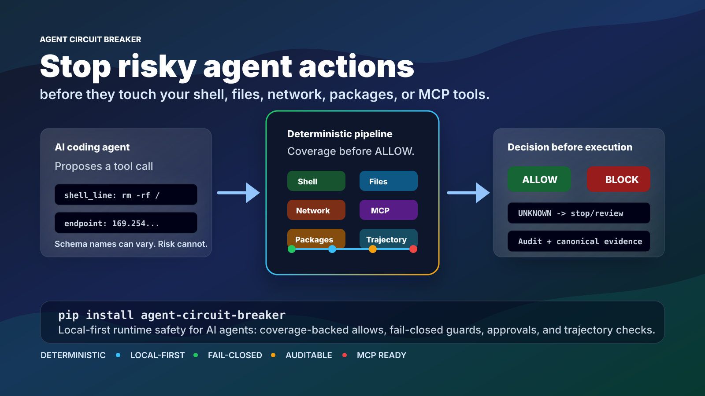

Intercept
Capture proposed shell, SQL, filesystem, package, network, or MCP activity.
Agent Circuit Breaker is the deterministic guard layer between AI agents and real execution. It evaluates shell commands, SQL, files, packages, network calls, MCP tool arguments, and long-running action sequences before they run.
rm -rf /srv/production/cache
How it works
ACB receives the action an agent wants to take, inspects it with deterministic rules, and returns a typed decision before execution authority is granted.
Capture proposed shell, SQL, filesystem, package, network, or MCP activity.
Apply built-in inspectors, custom rules, signed policy, and trajectory checks.
Return ALLOW, BLOCK, UNKNOWN, ERROR, or PENDING_APPROVAL with evidence.
Controls
Blocks recursive deletes, sensitive path changes, and dangerous permission shapes.
Detects destructive statements, broad mutations, and risky unqualified operations.
Flags suspicious egress, metadata endpoint access, and secret-to-network patterns.
Checks stdio tool-call arguments and fails closed when forwarding is unknown.
Surfaces package install risk before an agent mutates the execution environment.
Reviews action sequences for repeated blocks, scope drift, and staged escalation.

Runtime posture
Every decision is designed to be inspectable: what was normalized, which coverage ran, what rule matched, and why the final verdict was returned.
Project
This section is linked directly from the top navigation so visitors no longer need a hidden URL to reach the repository, package, docs, release notes, or security information.
Try it locally
Start with the command line, then wire the same decision contract into Python, MCP, CI, or your agent runtime.
python -m pip install agent-circuit-breaker
agent-circuit-breaker check "rm -rf /"
# Verdict: BLOCK
agent-circuit-breaker check "mkdir /tmp/example"
# Verdict: ALLOW